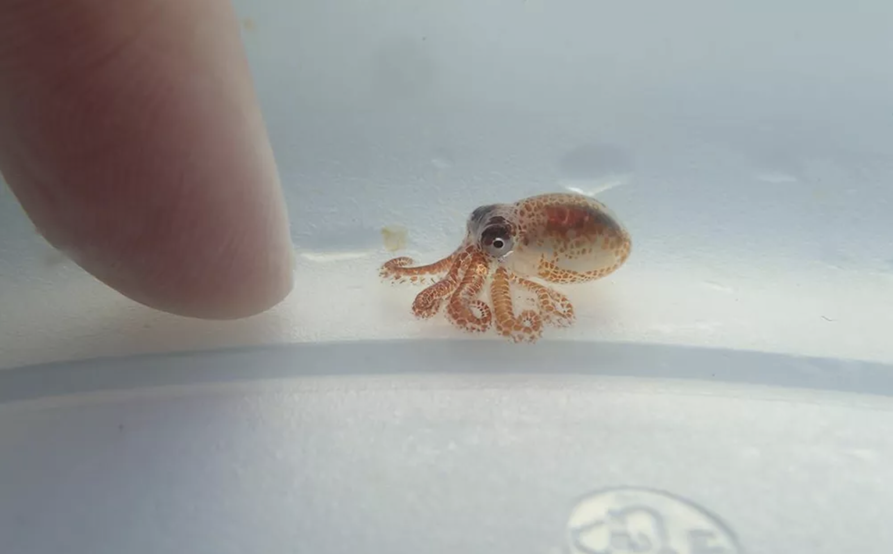

Hiiiiiiii!!!!!!
There are 4 main stages: egg, larva, juvenile, and adult.
Octopus lay eggs after fertilization, and the egg's size could be up to 0.3cm (0.12in) in size.
After 4 to 8 weeks of development, the larval octopus hatched from the eggs. These are called octopods.
The octopi's weight increases by 5% everyday due to its feeding habits. At the last stage of the octopus lifecycle, it's weight is 1/3 as much as the food it has eaten.
At this stage, the octopi is ready to mate, and die after a few months of mating.
click on the image to send it to the bottom right
(Image credit: Kaloko-Honokōhau National Historical Park Hawaii)
extra information here.